벤츠 GLC300 4MATIC 쿠페, 백색입니다.
차주분은 "뭔가 이상한데 어디가 이상한지 모르겠다"고 하셨습니다.
도장면을 쓸어보고 바로 확인됐습니다. 페인트 날림입니다.
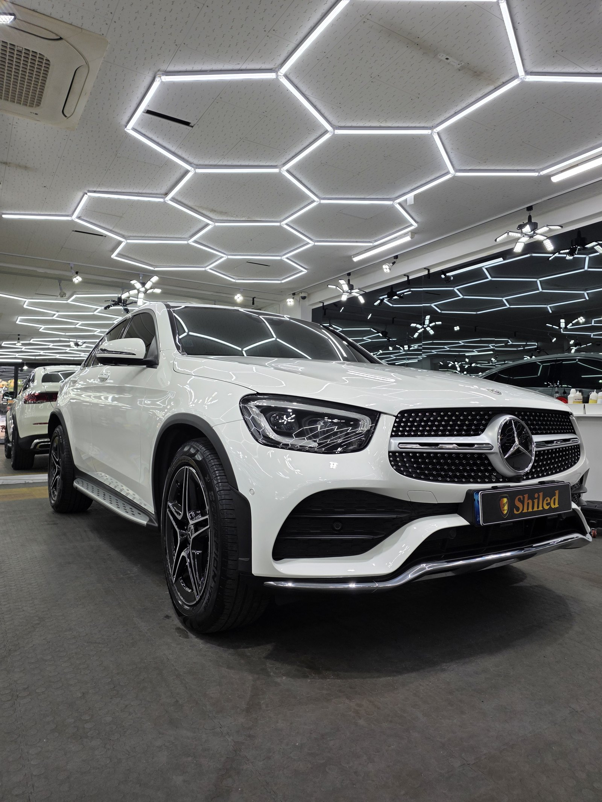
흰색차는 왜 페인트 날림을 늦게 발견하나
색 대비가 없어서입니다.
검정차는 하얀 도료 입자가 앉으면 바로 티가 납니다. 흰색은 반대입니다. 밝은 도료가 밝은 도장 위에 앉으니 눈으로는 거의 구분이 안 됩니다. 그래서 몇 주씩 모르고 타시다가 뒤늦게 오시는 경우가 많습니다.
눈이 못 찾을 때는 손이 찾습니다.
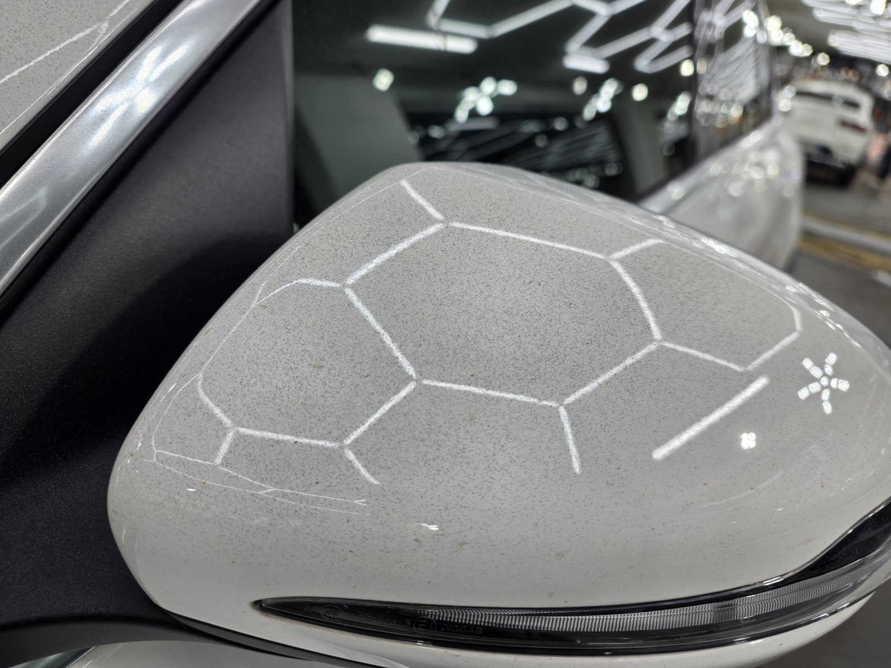
작업 전 사이드미러. 조명 윤곽이 알갱이에 걸려 번져 있습니다
사이드미러를 보시면 조명 육각 라인이 선명하지 않고 솜털처럼 번져 있습니다.
표면에 앉은 입자가 빛을 흩뜨리기 때문입니다. 흰색차는 이 반사 윤곽의 흐트러짐으로 판별하는 게 제일 빠릅니다.
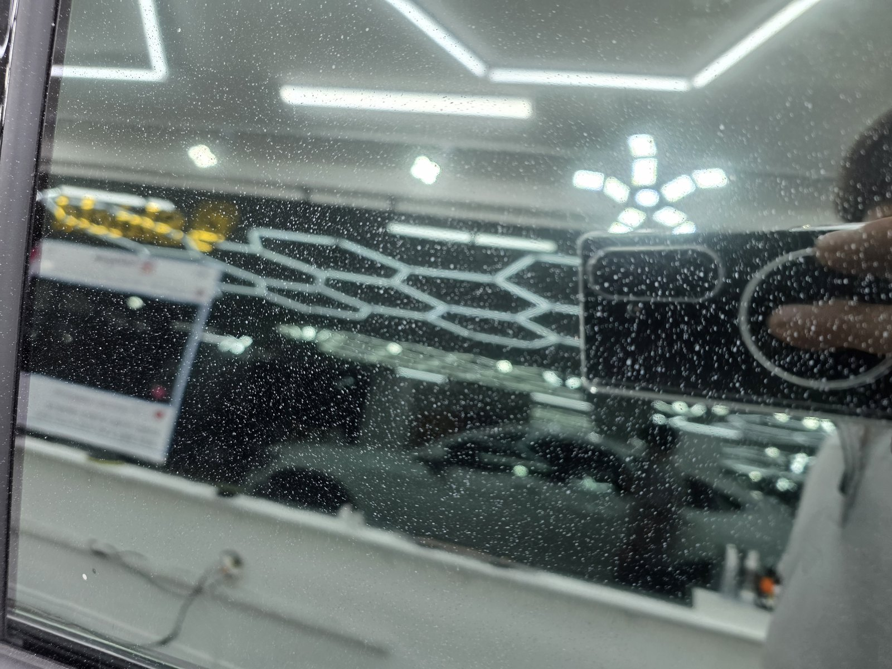
유리와 어두운 부위에서는 피해 범위가 훨씬 뚜렷하게 보입니다
흰색차 진단은 어두운 부위부터 봅니다.
유리, 무광 블랙 몰딩, 필러 트림처럼 어두운 곳에서는 같은 입자가 확연하게 드러납니다. 거기서 밀도를 확인하면 도장면에 얼마나 앉았는지 가늠이 됩니다.
이번 작업은 보험처리로 진행했습니다
차주분이 뭘 잘못해서 생긴 손상이 아닙니다.
주변 도장 작업이나 공사에서 날아온 도료라 원인을 제공한 쪽이 있습니다. 그래서 이번 GLC300 쿠페도 보험처리로 진행했습니다.
차주분이 하실 일은 피해 상태를 사진으로 남기고 견적을 받는 것까지입니다. 흰색차는 육안으로 티가 안 나서 "이걸로 보험이 되나" 걱정하시는데, 어두운 부위 사진과 진단 소견이 있으면 됩니다.
부산 광택, 페인트 날림은 어떤 순서로 잡나
연마부터 들어가지 않습니다.
굳은 입자가 얹힌 채로 패드를 대면 그 입자가 연마재가 되어 도장을 긁습니다. 없던 스크래치를 만들고 도장은 도장대로 더 깎여나갑니다.
① 디테일링 세차와 철분 제거로 표면 오염부터 걷어냅니다.
② 점토와 전용 약품으로 굳은 도료 입자를 떼어냅니다.
③ 광택으로 남은 미세 자국을 정리합니다.
GLC 쿠페는 리어 쪽 곡면이 급하게 떨어지는 차입니다. 평평한 본넷과 같은 방식으로 밀면 모서리 쪽만 과하게 먹습니다. 곡면은 압력을 줄여서 따로 잡았습니다.
기술자의 팁
무광 블랙 몰딩과 고무 웨더스트립에는 광택 패드를 대면 안 됩니다. 그 자리만 광이 나버려서 오히려 더 티가 납니다. 도장면·유리·무광 트림은 각각 다른 방법으로 나눠서 처리해야 마감이 균일합니다.
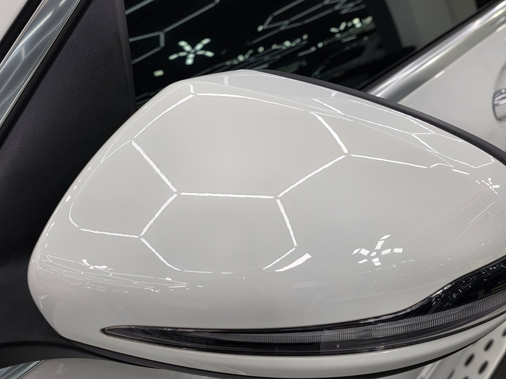
같은 사이드미러, 작업 후. 육각 조명이 칼선으로 맺힙니다
마감 후, 무엇이 달라졌나
번져 있던 조명 윤곽이 선으로 떨어졌습니다.
같은 백색인데 표면이 훨씬 매끈해 보입니다. 흰색은 색감 변화가 크지 않은 대신 반사 선명도로 차이가 드러납니다.
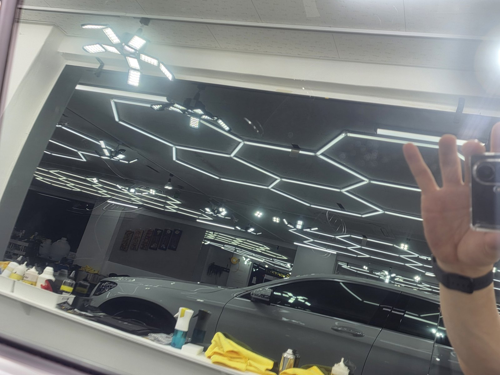
유리면도 걸리는 것 없이 정리됐습니다
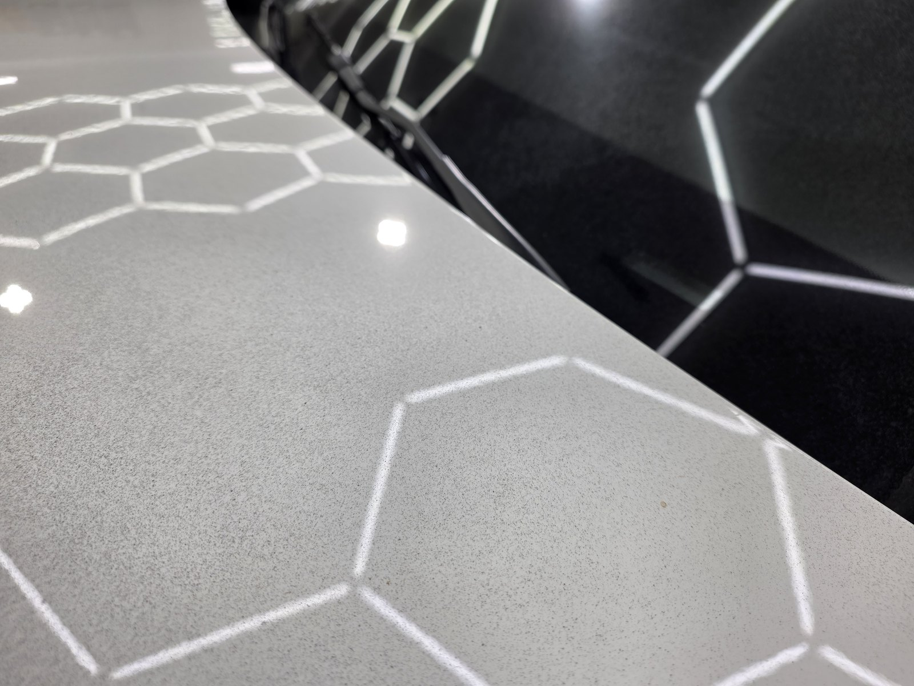
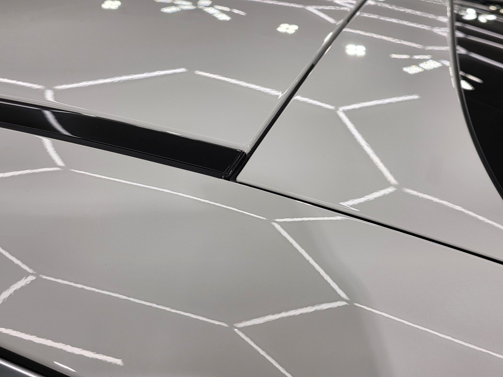
같은 패널, 작업 전후
마감은 G-PRO + G-TOP 듀얼코팅으로
입자를 떼어낸 도장면은 오염이 다시 붙기 쉬운 상태입니다.
그래서 G-PRO로 경도를 올리고 그 위에 G-TOP으로 발수·방오를 얹는 듀얼코팅으로 마감했습니다. G-PRO가 스크래치 내성을, G-TOP이 오염이 표면에 자리 잡는 것 자체를 줄여줍니다.
흰색차는 특히 오염이 눈에 잘 띄는 색입니다. 방오성을 담당하는 G-TOP이 얹혀 있으면 이후 세차 부담이 확실히 줄어듭니다. 코팅제는 제가 직접 개발·제조한 것으로 시공했습니다.
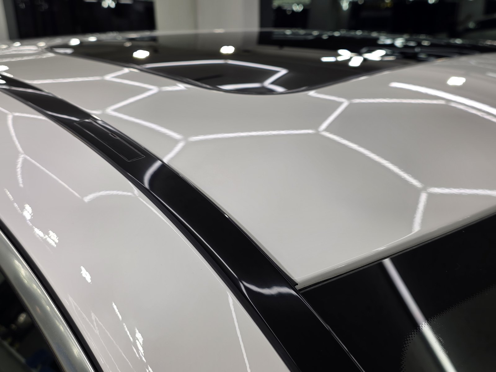
듀얼코팅 후 루프라인
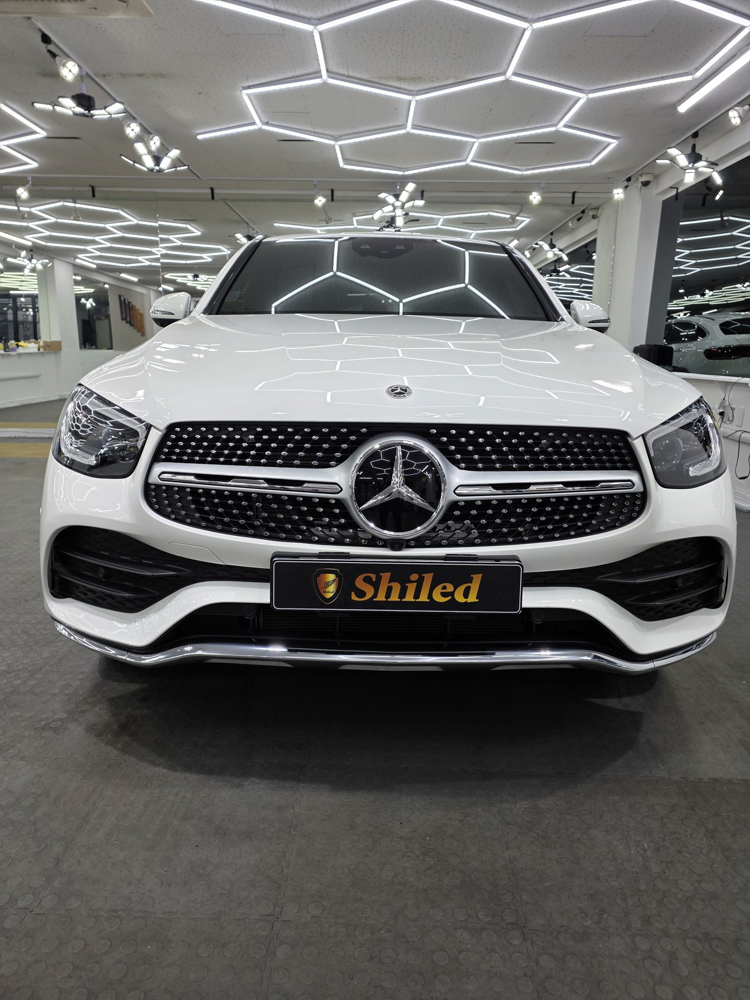
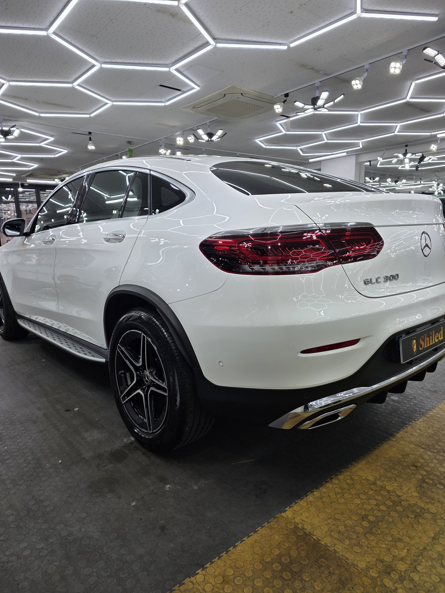
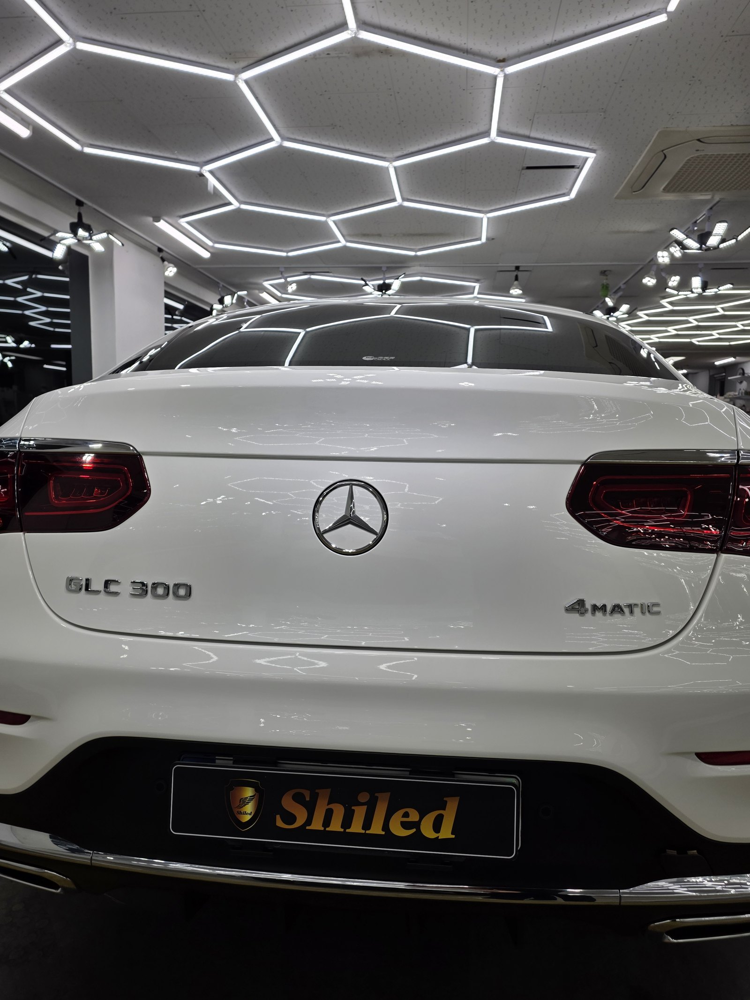
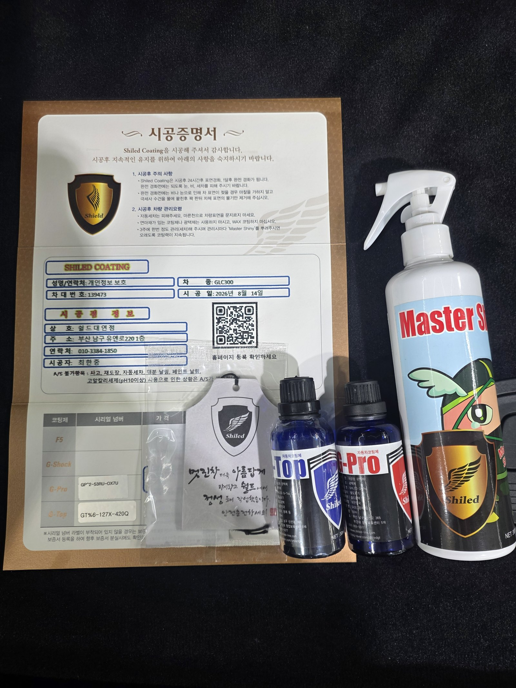
시공증명서와 관리용 Master Shiny를 함께 드립니다
자주 묻는 질문
Q. 흰색차인데 페인트 날림이 눈에 잘 안 보입니다. 어떻게 확인하나요?
A. 손으로 확인하는 게 가장 정확합니다. 비닐봉지를 손에 씌우고 도장면을 쓸어보면 눈으로 안 보이던 까끌거림이 그대로 잡힙니다. 흰색은 도료 입자와 색 대비가 작아 육안 판별이 어렵기 때문에, 유리·검정 몰딩·사이드미러처럼 어두운 부위를 먼저 보시면 피해 범위를 가늠하기 쉽습니다.
Q. 페인트 날림 피해, 보험처리 되나요?
A. 됩니다. 이번 GLC300 쿠페도 보험처리로 진행했습니다. 도장 작업이나 공사 현장에서 날린 도료가 남의 차에 앉은 피해이므로, 원인을 제공한 쪽의 배상책임 보험으로 처리되는 경우가 일반적입니다.
Q. 유리와 몰딩에 앉은 도료도 제거되나요?
A. 제거됩니다. 다만 소재마다 방법이 다릅니다. 유리는 도장면보다 단단해 처리 방식이 다르고, 무광 블랙 몰딩과 고무 웨더스트립은 광택 패드를 대면 광이 나버려 오히려 티가 납니다. 부위별로 나눠서 작업해야 합니다.
Q. 제거 후 도장면이 얇아지지 않나요?
A. 순서를 지키면 최소화됩니다. 굳은 입자를 점토와 전용 약품으로 먼저 떼어낸 뒤 광택은 남은 자국만큼만 잡습니다. 입자가 올라온 상태에서 곧바로 연마하면 그 입자가 연마재처럼 도장을 긁고 지나가 훨씬 많이 깎이게 됩니다.
Q. 쉴드광택 위치와 예약은 어떻게 하나요?
A. 부산 남구 유엔로220 1F 쉴드광택입니다. 예약·상담은 010-3384-1850, 대표 최한중이 직접 상담하고 책임 시공합니다.
흰색차라 안 보인다고 없는 게 아닙니다.
제품을 직접 만드는 사람이 직접 작업합니다.
부산에서 페인트 날림 제거와 광택을 고민 중이시면 편하게 연락 주십시오. 보험처리 건도 그대로 진행 가능합니다.
어떤 차를 타냐보다 어떻게 타냐가 중요합니다~!
시공 중에는 전화를 받지 못할 때가 많습니다.
카카오톡으로 차종과 원하시는 시공을 남겨주시면 확인 후 답변드립니다.
쉴드광택 · 부산 남구 유엔로220 1F · 대표 최한중